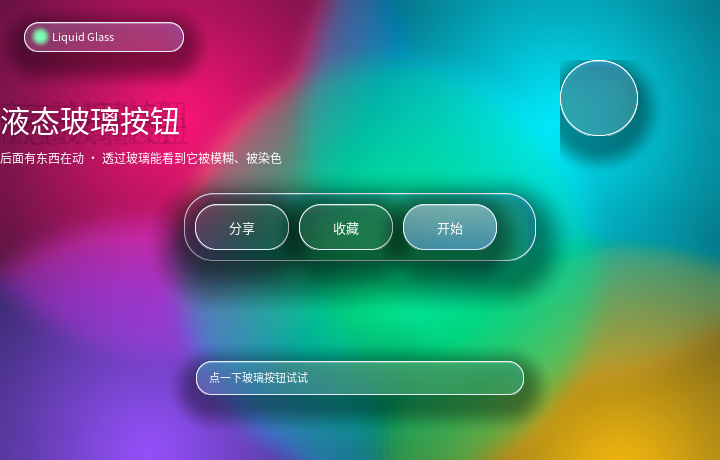

视觉与动效
液态玻璃：backdrop-filter 的玻璃按钮 + 背后会动的东西
只做 ① 会得到一块"灰蒙蒙的毛玻璃"；②③ 才是让人认出"这是玻璃"的东西。 这三样都是纯绘制，不增加模糊次数。

完整程序：example/38_liquid_glass/
想直接看效果：
./build/example/example_38_liquid_glass。 按住按钮会看到它变亮（:active），右上角那个玻璃气球会自己走， 走到哪儿就把哪儿的背景吃掉一块做成模糊。
1. 玻璃 = 三层，少一层就变"灰色塑料"
| 层 | 实现 | 作用 |
|---|---|---|
| ① 背后模糊 + 染色 | backdrop-filter: blur(40px) saturate(150%) + background-color: rgba(...,0.1~0.2) |
玻璃"透过去"的那部分 |
| ② 亮边 + 内高光 | border: 1px solid #FFFFFF + box-shadow: inset 0 1px 0 rgba(255,255,255,.55) |
玻璃的厚度感 |
| ③ 投影 | box-shadow: 0 10px 30px rgba(0,0,0,.38) |
玻璃浮在背景上 |
saturate() 不是装饰：模糊是加权平均，糊完的"均值色"饱和度必然下降，
玻璃看上去就像蒙了层灰塑料。真实玻璃、Apple 的 Liquid Glass 都是"糊完再把颜色
推回来"，经验值 140%~180%。这个例程里外层 .scene 推 150%、玻璃自己再推 150%
（两层叠加，玻璃底下那片颜色才够亮）。
.head, .dock, .btn, .puck {
backdrop-filter: blur(40px) saturate(150%);
background-color: rgba(226, 236, 255, 0.12);
background-image: linear-gradient(180deg, #FFFFFF, #DCE8F8);
border-width: 1px;
border-style: solid;
border-color: #E9EFF9;
box-shadow: inset 0px 1px 0px rgba(255, 255, 255, 0.55),
0px 10px 30px rgba(0, 0, 0, 0.38);
}
2. 背后的"东西"：整层一次模糊
五个 400~520px 的色块互相重叠、各自 transform: translate() 动画（零重排），
外面套一层 filter: blur() saturate()：
.scene {
filter: blur(14px) saturate(150%); /* 一个离屏图层，**不是**五个 */
}
色块自己先用"到透明"的径向渐变做了柔边，所以外面这层 blur() 只要收一下毛边：
.b1 { background-image: radial-gradient(circle, #FF2D6F, rgba(255, 45, 111, 0)); }
渐变的两个色标可以各带自己的 alpha（这条是本例程逼出来的库能力，见 §3.1）。 写成不透明的止色（
#9B0F45）得到的是硬边圆盘，必须靠大半径blur()去糊； 止色写rgba(...,0)就得到一团柔光斑，blur()只负责最后那点毛边。给每个色块各加一次
filter会让图层数乘 5。容器上一次就够， 因为filter是对"合成后的结果"生效 —— 这也是 CSS 的语义。
色块要大且重叠，保证任何位置的玻璃后面都有颜色。玻璃最容易翻车的场景是 "底下是深色空白"——那看起来就是一块灰塑料。
3. 这个例程逼出来的三个真 bug / 限制
写的时候一路"看着不对就查"，查到三件事，两件已经修进库里：
3.1 渐变的两个色标共用一个 alpha（已修）
background-color: rgba(226, 236, 255, 0.12); /* ← 透不透由它决定 */
background-image: linear-gradient(180deg, #FFFFFF, #DCE8F8); /* ← 只做明暗 */
一开始本库一个背景只有一个 alpha：rgba() 写在渐变色标里会被忽略。
于是"上亮下透"的渐变（玻璃最常用的那种）做不出来，只能"整体 alpha + 明暗层次"，
色块也只能是硬边圆盘、靠大半径模糊去糊。
后来补上了：两个色标各带自己的 alpha，插值时"颜色 + alpha"两组分量一起插。
background-image: linear-gradient(180deg, rgba(255,255,255,1), rgba(255,255,255,0));
background-image: radial-gradient(circle, #FF2D6F, rgba(255, 45, 111, 0)); /* 柔边光斑 */
兼容规则：两个色标都不写 alpha 时，渐变的 alpha 沿用 background-color 的
（旧行为不变，也正是 transition: background-color 能改玻璃"透光度"的原因）；
一旦色标自己带了 alpha，就以渐变里的为准。
3.2 box-shadow: inset + 圆角=半边长 → 四角被涂满（已修）
玻璃按钮/气球都是"药丸"或正圆，也就是 border-radius 正好等于半边长。
这种形状下 SDF 是圆角轮廓的，矩形四角落在轮廓外面，而内阴影的覆盖率公式
在那一片恒等于 1 —— 于是四个角被整片涂成阴影色，看起来像"圆外面套了个方框"。
CPU 侧的 ql_canvas_fill_inset_shadow() 用 round_row_span() 限定在轮廓内，所以
只有 GPU 有这个问题，而且离屏对拍没覆盖到（当时没有圆角 + 内阴影的用例）。
修法是片元里再乘一个"在轮廓内"的覆盖率：
float cov = 1.0 - smoothstep(0.0, max(border, 1.0), -d);
cov *= 1.0 - smoothstep(-0.5, 0.5, d); /* ← 新增 */
回归测试加在 test_gl_vs_cpu（"box-shadow: inset + 正圆 / 药丸"两例）：
改回去立刻报 差异 2.07%。
3.3 transition 只认这七个属性
transition: background-color 180ms ease-out, border-color 180ms ease-out;
按下时只改 background-color / border-color，不改 background-image ——
后者不在可过渡列表里，写了会在构建期报错（本库的原则是不静默忽略）。
可过渡属性：background-color / opacity / color / border-color /
border-radius / transform / clip-path。
4. 玻璃叠玻璃
按钮坐在玻璃"托盘"上（.dock 里放 .btn）。这是最容易出问题的地方：
后画的元素模糊的必须是"已经画好的背景"，包括托盘自己。
本库的实现顺序天然满足这一点（backdrop-filter 在画自己背景之前采样），
所以玻璃套玻璃直接就能用，不需要额外处理。
5. 性能
| 项 | 数值（本机 1920×1080、GPU 后端） |
|---|---|
| 帧时间 p50 | 6.92 ms（≈144 fps，跟 vsync） |
| 其中等 swap | 6.64 ms（几乎全是等垂直同步） |
| 实际渲染 | 约 0.3 ms |
代价主要在模糊次数：5 个玻璃元素各一次 backdrop 模糊 + 场景一次
filter 模糊。想更快就减少玻璃元素数量或降低 blur() 半径
（半径直接决定降采样的盒半径）。
CPU 后端（--dump）也能跑，画面基本一致，只是模糊是逐像素盒式近似、边缘略硬。
6. 背景为什么不会出现"色带"
大面积模糊背景最容易露馅的不是模糊本身，而是 8 位量化：一段"100px 才变一个 色阶"的缓渐变压进 256 档就是一条条竖直色带（这个例程最初就是这样，肉眼很明显）。
修法是在"float → 8 位"的那一下加有序抖动（4×4 Bayer，±0.5 色阶），
平均色不变、台阶被打散成看不见的噪点。技术细节见
doc/手册/render/QLRender阅读指南.md §16；QLGL_GL_NDITHER=1 可以关掉它做 A/B 对比。